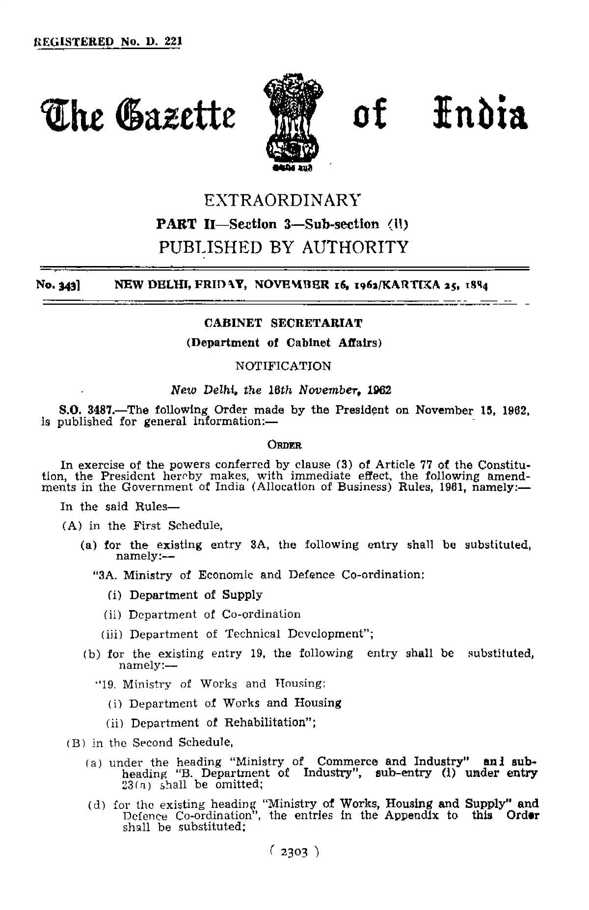
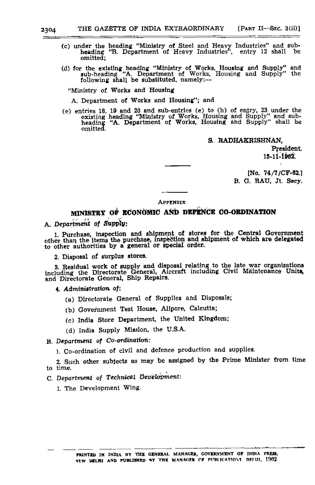

Amendment #13 (S.O. 3487, 1962)
7 changes: 2 to the First Schedule, 5 to the Second Schedule. 4 applied3 not applied
What it did to the ministries
- renamedMinistry of Works, Housing and Supply is renamed Ministry of Works and Housing change 2, 6 · histories: Works, Housing and Rehabilitation
- grewMinistry of Economic and Defence Co-ordination grows from 2 to 7 subjects change 1, 4 · histories: Supply
- shrankMinistry of Works and Housing shrinks from 46 to 20 subjects change 2, 6 · histories: Works, Housing and Rehabilitation
The order, page by page
Page 1 of 2

1234Schedule 1 › entry 3A
- 3A. Ministry of Economic and Defence Co-ordination:
- i. Department of Supply
- ii. Department of Co-ordination
- iii. Department of Technical Development
applied at schedule 1 › ministry 3A in the Rules after #13
read hindi missing
Schedule 1 › entry 19
- 19. Ministry of Works and Housing
- i. Department of Works and Housing
- ii. Department of Rehabilitation
applied at schedule 1 › ministry 19 in the Rules after #13
read hindi missing
Schedule 2 › Ministry of Commerce and Industry › Department of Industry › entry 23 › item a › item 1
not applied (the change could not be placed in the Rules as read; see How this document was read)
Schedule 2 › Ministry of Economic and Defence Co-ordination
- APPENDIX
- MINISTRY OF ECONOMIC AND DEFENCE CO-ORDINATION * Y
- A. Department of Supply:
- 1. Purchase, inspection and shipment of stores for the Central Government other than the items the purchase, inspection and shipment of which are delegated to other authorities by a general or special order.
- 2. Disposal of surplus stores.
- 3. Residual work of supply and disposal relating to the late war organisations including the Directorate General, Aircraft including Civil Maintenance Units and Directorate General, Ship Repairs.
and 10 more
- 4. Administration of:
- a. Directorate General of Supplies and Disposals
- b. Government Test House, Alipore, Calcutta
- c. India Store Department, the United Kingdom
- d. India Supply Mission, the U.S.A.
- B. Department of Co-ordination:
- 1. Co-ordination of civil and defence production and supplies.
- 2. Such other subjects as may be assigned by the Prime Minister from time to time.
- C. Department of Technical Development:
- 1. The Development Wing.
applied at schedule 2 › ministry Ministry of Economic and Defence Co-ordination in the Rules after #13
read hindi missing, read path unsure
Page 2 of 2

567Schedule 2 › Ministry of Steel and Heavy Industries › Department of Heavy Industries › entry 12
not applied (the change could not be placed in the Rules as read; see How this document was read)
Schedule 2 › Ministry of Works, Housing and Supply › Department of Works, Housing and Supply
- Ministry of Works and Housing
- A. Department of Works and Housing
applied at schedule 2 › ministry Ministry of Works and Housing in the Rules after #13
read hindi missing, states inferred one heading
Schedule 2 › Ministry of Works, Housing and Supply › Department of Works, Housing and Supply › entry 18; Schedule 2 › Ministry of Works, Housing and Supply › Department of Works, Housing and Supply › entry 19; Schedule 2 › Ministry of Works, Housing and Supply › Department of Works, Housing and Supply › entry 20; Schedule 2 › Ministry of Works, Housing and Supply › Department of Works, Housing and Supply › entry 23 › entry
not applied (the change could not be placed in the Rules as read; see How this document was read)
How this document was read
Edits to the reading
| Date | By | Edit | Before → after |
|---|---|---|---|
| 12 November 2026 | claude | word corrected |
Changes placed by an inference rule
| Change | Rule | Status | What |
|---|---|---|---|
| 6 | one_heading | accepted | change 6: the heading MINISTRY OF WORKS, HOUSING & SUPPLY and its sub-heading A Department of Works, Housing & Supply. put as one heading, Ministry of Works and Housing |
Known issues
| Change | Issue | Known as |
|---|---|---|
| 3 | change 3: no item 1 under schedule 2 › ministry MINISTRY OF COMMERCE & INDUSTRY › department B › group_heading VII › entry 23 › item a | Items |
| 5 | change 5: no department Department of Heavy Industries under schedule 2 › ministry Ministry of Steel & Heavy Industries. | A unit cited by a name the Second Schedule does not have |
| 7 | change 7: no ministry Ministry of Works, Housing and Supply under schedule 2 | A unit cited by a name the Second Schedule does not have |
From the Government of India (Allocation of Business) Rules, 1961 and their amendments, as published by the Cabinet Secretariat (cabsec.gov.in), read by orgpedia. The readings of the older scanned gazettes have known gaps.